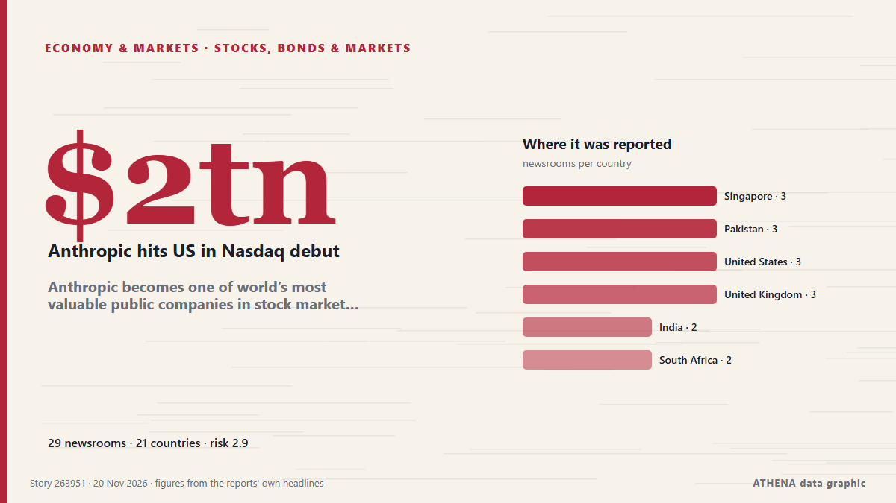

Anthropic becomes one of world’s most valuable public companies in stock market debut

Anthropic is the first purely AI company to be publicly listed, creating a test for the entire industry. de BBC News
Relayé de façon indépendante par 31 médias dans 21 pays depuis le 19 nov. ; premier à l'annoncer : Ada Derana ; la couverture faiblit. ATHENA juge le risque modéré (3.8/10), surtout en raison de la gravité des dommages décrits et de sa portée géographique et sectorielle. La confiance est de 81 % (élevée) : 31 médias indépendants le confirment, avec une fiabilité moyenne des sources de 74 %. Médias par pays : Royaume-Uni (4), Singapour (3), Pakistan (3). Couverture : du 19 nov. au 20 nov., 35 heures.
Pourquoi c'est important: Les évolutions économiques et de marché se répercutent sur les prix, l'emploi, le coût du crédit et l'investissement.
Ce qui a changé : 26 nouveaux articles de 24 rédactions dans les 24 heures jusqu'au 20 nov..
Premier titre : Claude-maker Anthropic poised for stock market debut worth up to $1.5tn
AutomatiséSélectionné, regroupé et noté selon la méthode publiée d'ATHENA à partir de 31 médias indépendants. Le titre est celui du média ; les phrases d'ATHENA suivent des modèles fixes - aucune IA générative ne les rédige. Comment ça marche →
Comment lire cette page
- Ce que vous lisez
- 31 médias dans 21 pays ont rapporté cet événement. Les reportages ci-dessous sont classés selon leur ordre de parution ; chaque titre ouvre l'article original. ATHENA n'écrit aucun reportage.
- Notre lecture
- Pour mémoire — Les reportages décrivent une affaire terminée, intérieure, commerciale ou personnelle. Nous la consignons pour que vous voyiez qui l'a rapportée et quand. Nous ne suivons pas ici de risque de conflit plus large.
- Quelle base de preuves
- Solide De nombreux médias indépendants, dans de nombreux pays, décrivent le même événement.
Après retrait des doublons, des éléments hors sujet et périmés, 28 des 34 reportages listés sont retenus ; 100 % des titres correspondent à l'événement.
- Ce que cela ne veut pas dire
- ATHENA mesure la façon dont un événement est rapporté, pas sa véracité. Ce n'est ni une prévision, ni un jugement sur qui a raison, ni un conseil.
- Ce qui la changerait
- Des reportages d'autres médias indépendants montrant une évolution différente, ou une confirmation ou un démenti ferme d'une source officielle.
Lecture R2 · actualisée à chaque mise à jour de cette page. ATHENA n'a pas encore publié de bilan de ces lectures ; il sera lié ici le moment venu.
En un coup d'œil
Sélectionné, noté et rédigé par la méthodologie publiée d'ATHENA. Aucun rédacteur n'intervient sur un événement en particulier. Comment il est produit ›
| 19 Nov 02:49 UTC | 1 |
|---|---|
| 19 Nov 04:49 UTC | 1 |
| 19 Nov 06:49 UTC | 1 |
| 19 Nov 08:49 UTC | 2 |
| 19 Nov 10:49 UTC | 2 |
| 19 Nov 12:49 UTC | 1 |
| 19 Nov 14:49 UTC | 5 |
| 19 Nov 16:49 UTC | 8 |
| 19 Nov 18:49 UTC | 3 |
| 19 Nov 20:49 UTC | 2 |
| 19 Nov 22:49 UTC | 3 |
| 20 Nov 00:49 UTC | 0 |
| 20 Nov 02:49 UTC | 1 |
| 20 Nov 04:49 UTC | 1 |
| 20 Nov 06:49 UTC | 1 |
| 20 Nov 08:49 UTC | 0 |
| 20 Nov 10:49 UTC | 1 |
| 20 Nov 12:49 UTC | 1 |
| 19 Nov 07:16 UTC | 0.0 |
|---|---|
| 19 Nov 13:28 UTC | 0.8 |
| 19 Nov 15:54 UTC | 0.0 |
| 19 Nov 18:17 UTC | 2.0 |
| 19 Nov 18:26 UTC | 3.6 |
| 20 Nov 19:56 UTC | 3.8 |
| 20 Nov 19:56 UTC | 3.8 |
Pourquoi ces chiffres
Importance
Risque
Confiance
La couverture : qui l'a annoncé, et quand
titre tel que publié · ouvre l'original- Ada Derana · Sri LankaClaude-maker Anthropic poised for stock market debut worth up to $1.5tn
- Indian Express · IndeAnthropic’s stock market debut marks many firsts. Will it boost a struggling AI sector?
- IOL · Afrique du SudAnthropic to begin trading after record-breaking market debut tops SpaceX record
- The Business Times · SingapourAnthropic hits US$2 trillion in Nasdaq debut, tops SpaceX’s June listing
- Express Tribune · PakistanAnthropic set to secure $1.8 trillion valuation in strong Nasdaq debut
- Forbes Business · États-UnisAnthropic IPO Live: Nasdaq Futures Jump At Market Open Ahead Of Record Stock Debut
- MyJoyOnline · GhanaAnthropic raises $81bn in record-breaking stock market debut
- Fast Company · États-UnisAnthropic stock closes 17% higher on its first trading day as Nasdaq sputters
- The Business Times · SingapourNasdaq climbs as tech leads gains ahead of Anthropic’s market debut
- TheJournal.ie · IrlandeAnthropic, the AI firm behind Claude, briefly valued at $2 trillion after record Wall Street debut
- CNA (Channel NewsAsia) · SingapourAnthropic draws bullish Wall Street calls ahead of Nasdaq debut
- Business Recorder · PakistanWall St wavers ahead of Anthropic market debut
- Taipei Times · TaïwanAnthropic to begin trading after big debut
- FXStreet · EspagneAnthropic stocks surges to $111 at NASDAQ debut
- UPI World News · États-UnisStocks plunge as Anthropic closes up 17% in market debut
- Business Recorder · PakistanAnthropic hits $2 trillion in Nasdaq debut, tops SpaceX's June listing
- TRT World · TurquieAnthropic storms onto Wall Street, tops $2T after record-breaking IPO
- Times of India · IndeAnthropic shares close 17% higher on first day of trading; company valued at $1.76 tn
- The Next Web · Pays-BasAnthropic shares jump 34% at open in record Nasdaq debut
- Nikkei Asia · JaponAnthropic opens up 34% in trading debut after record IPO
- SABC News · Afrique du SudAnthropic tops SpaceX with record $2 trillion Nasdaq debut
- Nile Post · OugandaAnthropic becomes one of world's most valuable public companies in stock market debut
- Cyprus Mail · ChypreAnthropic tops SpaceX with record $2 trillion Nasdaq debut
- ABC News Australia · AustralieLive: Anthropic's record-breaking listing hits Nasdaq, ASX set to drop
- Al Jazeera English · QatarThree arrested during Anthropic IPO protest outside Nasdaq
- OilPrice.com · Royaume-Uni5 Energy Stocks to Benefit from Anthropic’s $1.5 Trillion Debut
- BBC News · Royaume-UniAnthropic becomes one of world's most valuable public companies in stock market debut
- BBC News · Royaume-UniHow did Anthropic's stock market debut unfold?
- The Korea Times · Corée du SudAnthropic tops SpaceX with record $2 trillion Nasdaq debut
- The Business Standard (Bangladesh) (working feed) · BangladeshAnthropic emerges as one of world's most valuable companies after stock market debut
- Capital FM Kenya · KenyaAnthropic becomes one of world’s most valuable public companies in stock market debut
- The Age · AustralieAnthropic starts trading in record IPO
- Anadolu Agency (English) · TurquieAnthropic shares fall over 6% in US premarket trading after Nasdaq debut
- Sky News (World) · Royaume-UniAnthropic among big fallers in global stock market rout